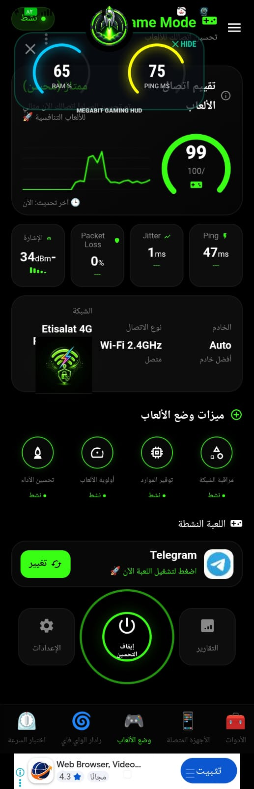

ما هو وضع الألعاب؟ What is Game Mode?
يجمع Game Mode أدوات لمتابعة جودة الشبكة ومعلومات الأداء في شاشة واحدة. تساعدك هذه اللوحة على ملاحظة تغير الاتصال ومعرفة ما إذا كانت المشكلة مرتبطة بارتفاع زمن الاستجابة أو تذبذبه أو فقدان بعض الحزم، بدلاً من الاعتماد على الانطباع وحده. Game Mode brings network-quality and performance information together in one screen. It helps you notice connection changes and determine whether an issue may involve high latency, jitter, or packet loss instead of relying on impressions alone.
لا يستطيع التطبيق إزالة التأخير في كل لعبة أو تجاوز ازدحام الشبكة وخادم اللعبة. تعتمد التجربة على الراوتر ومزود الإنترنت وموقع الخادم والجهاز، لذلك استخدم المؤشرات لتشخيص الظروف ومقارنة الإعدادات، لا كضمان للفوز أو لاتصال خالٍ من التأخير. The app cannot eliminate lag in every game or bypass network congestion and game-server conditions. Your experience depends on the router, internet provider, server location, and device. Use the metrics to understand and compare conditions, not as a guarantee of winning or lag-free play.
مؤشرات الاتصال التي تهم اللاعبين Connection metrics that matter to gamers
- Ping: زمن استجابة الاتصال إلى نقطة القياس أو الخادم، ويُعرض عادةً بالمللي ثانية. انخفاضه قد يجعل التفاعل أسرع، لكنه يتأثر بمسافة الخادم والازدحام. The connection response time to a measurement endpoint or server, usually shown in milliseconds. Lower values can feel more responsive, but server distance and congestion also matter.
- Jitter: مقدار تغير زمن الاستجابة بين القياسات. التذبذب الكبير قد يجعل اللعب غير متسق حتى عندما تبدو قيمة Ping المتوسطة مقبولة. How much response time varies between measurements. High jitter can make gameplay inconsistent even when average ping looks acceptable.
- Packet Loss: نسبة الحزم التي لم تصل كما هو متوقع خلال القياس. قد يرتبط فقدان الحزم بتقطّع أو تأخر في تحديث الحالة داخل اللعبة. The share of packets that did not arrive as expected during measurement. Packet loss may contribute to stuttering or delayed game-state updates.
- تقييم الاتصال:Connection score: مؤشر تلخيصي لحالة الاتصال المعروضة، وليس معياراً موحداً لجاهزية اللعب التنافسي أو نتيجة مضمونة للأداء. A summary of the displayed connection status, not a universal measure of competitive readiness or a guaranteed performance result.
ما الذي تعرضه نافذة الأداء العائمة؟ What does the floating performance overlay show?
عند تفعيل الإذن المناسب، يمكن أن تعرض النافذة العائمة معلومات مختارة فوق اللعبة، مثل Ping وRAM ومؤشرات الجهاز. تتيح لك متابعة الحالة دون مغادرة اللعب، ويعتمد توفر البيانات ومظهرها على إصدار التطبيق والهاتف وإصدار Android. When the required permission is enabled, the floating overlay can show selected information over a game, such as ping, RAM, and device metrics. It lets you check status without leaving the game. Available data and appearance depend on the app version, phone, and Android version.

مكتبة الألعاب والأولوية Game library and priority
تساعد مكتبة الألعاب على اختيار اللعبة المدعومة وفتحها من داخل التطبيق، مع إعدادات أو متابعة مرتبطة بوضع الألعاب بحسب الإصدار. وقد تشمل الألعاب الشائعة مثل PUBG Mobile وFree Fire وCall of Duty: Mobile إذا ظهرت ضمن قائمة النسخة المثبتة. The game library can help you select and launch a supported game from the app, with Game Mode settings or monitoring depending on the version. Popular titles such as PUBG Mobile, Free Fire, and Call of Duty: Mobile may appear if supported in your installed version.
تساعد خيارات الأولوية على تنظيم تجربة الاستخدام، لكن Android لا يمنح تطبيقاً عادياً تحكماً مطلقاً بعرض النطاق الترددي أو قدرة عامة على منع كل التطبيقات الأخرى من إرسال البيانات. قد تختلف آلية الأولوية والميزات المتاحة حسب صلاحيات النظام وطريقة اتصال الجهاز. Priority options can help organize the experience, but Android does not give a regular app absolute control over bandwidth or a general ability to stop every other app from sending data. How prioritization works and which features are available depend on system permissions and the device connection.
خطوات عملية لجلسة لعب أكثر استقراراً Practical steps for a more stable gaming session
- اتصل بشبكة موثوقة، وجرّب الاقتراب من الراوتر أو استخدام اتصال سلكي إذا كان جهاز اللعب يدعمه. Connect to a trusted network, try moving closer to the router, or use a wired connection if your gaming device supports it.
- شغّل اللعبة وافتح وضع الألعاب، ثم راقب Ping وJitter وفقدان الحزم أثناء اللعب الفعلي. Launch your game and open Game Mode, then monitor ping, jitter, and packet loss during actual gameplay.
- أوقف التنزيلات والبث غير الضروريين على الشبكة، ثم قارن النتائج في أوقات مختلفة. Pause unnecessary downloads and streaming on the network, then compare results at different times.
- إذا استخدمت VPN، قارن الاتصال به وبدونه؛ قد يحسّن المسار في بعض الحالات أو يزيد التأخير في حالات أخرى. If you use a VPN, compare the connection with and without it; it may improve routing in some cases or add latency in others.
- فعّل إذن نافذة الأداء عند الحاجة فقط، وراجع إعدادات توفير الطاقة والتطبيقات الخلفية في هاتفك. Enable overlay permission only when needed, and review battery-saving and background-app settings on your phone.
حل المشكلات الشائعة Common troubleshooting
- ارتفاع Ping:High ping: جرّب خادماً أقرب داخل إعدادات اللعبة، وافحص الاتصال قرب الراوتر. تبديل VPN قد يساعد أحياناً، لكنه ليس حلاً مضموناً. Try a closer server in the game settings and test near your router. Switching VPN routes may help sometimes, but it is not guaranteed.
- تذبذب أو فقدان حزم:Jitter or packet loss: قلّل ازدحام الشبكة، وأعد تشغيل الراوتر عند الحاجة، وتحقق من وجود تحديثات للبرنامج الثابت. Reduce network congestion, restart the router if needed, and check for firmware updates.
- النافذة العائمة لا تظهر:The floating overlay does not appear: تحقق من إذن الظهور فوق التطبيقات، ومن قيود البطارية أو الأذونات الخاصة بهاتفك. Check display-over-other-apps permission and any battery or permission restrictions on your phone.
- اللعبة غير موجودة في المكتبة:A game is missing from the library: حدّث قائمة الألعاب أو افتح اللعبة بالطريقة المعتادة؛ توفر المكتبة ودعم الألعاب قد يختلفان حسب الإصدار. Refresh the game list or open the game normally; library availability and game support can vary by version.